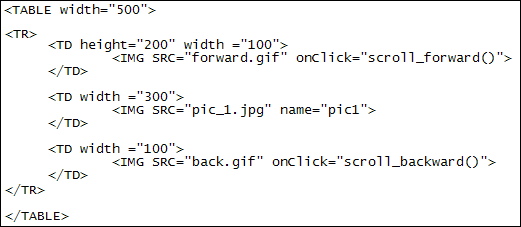
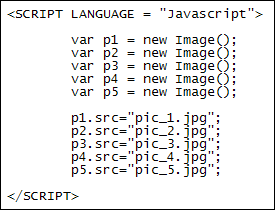
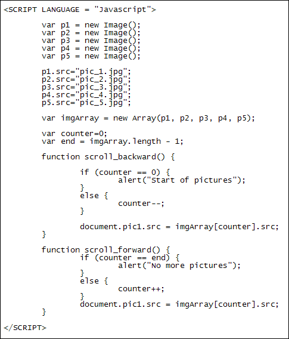

Creating New Images with Javascript
You can create a new image with Javascript. You then add a SRC part for each image you create.
To get some practice with creating images, we're going to code a simple image scroller. It looks like this:

|
 |

|
The idea is that you click one of the arrows and a new picture appears. There are lots of ways to do this, but we're just trying to illustrate the use of Javascript image creation here.
To download the images for this section, click below: (They're just a few snaps we took in London. The arrows were created by us in Photoshop.)
Download the images for this section (96 kilobyte zip file)
Create a new web page for this from your template. Put the images and the webpage in the same folder. Leave the two SCRIPT tags in the HEAD section this time. To arrange everything on the webpage, we've resorted to the use of an old-fashioned table. But you might want to do something fancy with CSS. Here's ours, though:

So we have a table with one row. There's three cells in the row (TD). The first cell holds the forward arrow:
<IMG SRC="forward.gif" onClick="scroll_forward()">
The image has had an onClick event added to it. It is calling a function with the name of scroll_forward. The other arrow image is in cell three. The function for its onClick event is called scroll_backward. The cell in the middle holds the larger picture:
<IMG SRC="pic_1.jpg" name="pic1">
The SRC says pic_1.jpg. We're going to be changing this SRC when either of the arrows is clicked. Note that we also have a name attribute called pic1. We'll need this to reference the image.
So as the first line of your script, add the following:
var p1 = new Image();
An image is create with the new keyword just after an equal sign. After a space, type the word Image (uppercase "I"). A pair of round brackets follows the word Image.
The p1 variable above will create an image object. To put a picture in it, add this line:
p1.src="pic_1.jpg";
The src after p1stands for source. In other words, the file path to your image. If the web page is in the same folder as the images then the code above will work. If you had your images in a separate folder, but in the same directory as the web page, then the code would be this:
p1.src="images/pic_1.jpg";
The result is the same: you're storing a picture to go with your new image object.
Set up four more new images, and the pictures to go with them. You code will then look like this:

Now that we have created some new images, we can put them into an array. (The reason we're putting them into an array is so that we can scroll through them more easily.) Here's the next line to add to your code:
var imgArray = new Array( p1, p2, p3, p4, p5 );
With this line, each image object takes up a position in an array called imgArray. If you wanted to access image number 2, you'd do it like this (arrays start at 0, remember):
imgArray[1].src
This gets the SRC property from the image object at position 1 in the array, which is our second image.
If you want to switch the big image in the HTML with the image from the array, you'd then put this:
document.pic1.src = imgArray[1].src
To the left of the equal sign, we're referencing pic1. This is the NAME we added to the IMG code. After a dot, we have the SRC property again.
To make the arrows work, we need a bit of logic. Here's the code for the scroll_forward function:
var counter = 0;
var end = imgArray.length - 1;
function scroll_forward() {
if ( counter == end ) {
alert("No more pictures");
}
else {
counter++;
}
document.pic1.src = imgArray[counter].src;
}
We first set up a counter variable, and set it to 0. We then get the length of the array (how many items it has), and deduct 1 from it. This gets us the last position in the array.)
Inside the function itself is an IF Statement. It checks to see if the counter is the same as the value in the variable called end. This is the maximum value for our array. If we've reached the end then an alert message is displayed saying, "No more pictures".
If the counter isn't at the end of the array then we increment the counter variable. The last line sets the pic1 source to the current image from the array:
document.pic1.src = imgArray[counter].src;
The code for going backwards through the array of pictures is almost the same as for going forwards:
function scroll_backward() {
if ( counter == 0 ) {
alert("Start of pictures");
}
else {
counter--;
}
document.pic1.src = imgArray[counter].src;
}
There are two differences here. The first one is that the IF Statement now checks if counter has a value of 0. If it does then we display a different message in the alert box. If it's not then we deduct 1 from counter:
counter--;
To increment a variable by 1 you use the double plus symbols ++. If you want
to decrement a counter by 1 then you use the double minus symbols --.
In both versions of the scroll code, though, we access the array of new images
by manipulating the index number between the square brackets. This gives a different
picture when the arrows are clicked. Here's the whole of the Javascript code:

In the next lesson, you'll create a simple mouse rollover effect.